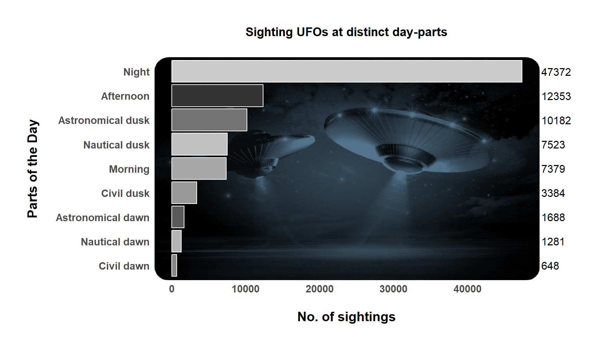

suppressWarnings(library(tidyverse))
library(knitr)
library(lubridate)Dataset Setup
Plots
# Libraries
library(ggplot2)
library(hrbrthemes)NOTE: Either Arial Narrow or Roboto Condensed fonts are required to use these themes. Please use hrbrthemes::import_roboto_condensed() to install Roboto Condensed and if Arial Narrow is not on your system, please see https://bit.ly/arialnarrowlibrary(dplyr)
library(tidyr)
library(viridis)Loading required package: viridisLitelibrary(ggridges)
library(ggplot2)
library(tidyverse)
library(ggpubr)
library(jpeg)
## Not run:
library(png)
#library(ggtextures)
#install.packages('ggtextures', dependencies = TRUE, repos='http://cran.rstudio.com/')
#install.packages('magick', dependencies = TRUE, repos='http://cran.rstudio.com/')
#library(magick)#devtools::install_github("dgrtwo/gganimate")
data <- read.csv("https://raw.githubusercontent.com/rfordatascience/tidytuesday/master/data/2023/2023-06-20/ufo_sightings.csv")
noNAData <- na.omit(data)
#dd <- data |>
# count(day_part)
dp <- noNAData |>
count(day_part)
#b1 <- dd[,1]
#b2 <- dd[,2]
c1 <- dp[,1]
c2 <- dp[,2]
#old <- data.frame(b1,b2)
new <- data.frame(c1,c2)
# Import the image
#img <- readJPEG("img5.jpg")
#img <- jpeg::readJPEG("img1.png")
img <- readPNG("img7.png")
y_ticks <- c("Civil dawn", "Nautical dawn", "Astronomical dawn", "Civil dusk","Morning","Nautical dusk", "Astronomical dusk", "Afternoon", "Night")
#options(repr.plot.width = 5, repr.plot.height =2)
# basic example
ggplot(new, aes(x=c2,y = reorder(c1,c2), fill = c1)) +
background_image(img)+
geom_bar(stat = "identity",color="white") +
theme_minimal()+
scale_fill_grey() +
scale_y_discrete(labels= y_ticks)+
ggtitle("Confrontation: Sighting UFOs at distinct day-parts\n") +
theme(plot.title = element_text(hjust = 0.5, face = "bold"))+
labs(x = "\nNo. of sightings",
y = "Parts of the Day\n")+
theme(axis.title.x = element_text(size = 14, face = "bold", hjust = 0.5),
axis.title.y = element_text(size = 14, face = "bold", hjust = 0.5),
axis.text.x = element_text(face="bold", size= 11),
axis.text.y = element_text(face="bold", size= 11),
legend.position="none",
plot.margin = margin(t = 2, # Top margin
r = 5, # Right margin
b = 1, # Bottom margin
l = 2, # Left margin
unit = "lines"))+
geom_text(x = 50000, # Set the position of the text to always be at '50000'
hjust = 0,
size = 4,
label = c2)+
coord_cartesian(clip = "off")
#ggsave("plot.png")